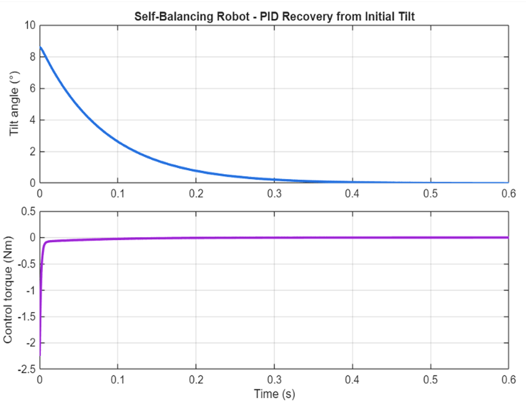

Self-Balancing Robot
Balancing and dancing to live music
Balancing means staying still. Dancing means moving. The robot had to do both at once.
Working from a robot board built for the module, we learned motor control, PID feedback control and real-time signal processing by building each part in MicroPython: balancing the robot, detecting beats in live audio, and turning those beats into wheel movements, then combining them into one control loop.
Balance
PID control keeps the robot upright in real time. I tuned the gains by hand, testing recovery on different surfaces until it stayed stable without oscillating.
Listen
A moving average filter picks the beat out of the incoming audio. A NeoPixel strip shows each detected beat and its strength, which made it easy to test and tune against tracks like Billie Jean.
One Loop
Each beat triggers a movement: the left wheel, the right wheel, or forwards and backwards. I tested balancing and beat detection separately first, then combined them into a single control loop so the robot dances without losing its balance.
Understanding the Response

After tuning by hand, I modelled the robot as an inverted pendulum in MATLAB to understand why it behaved as it did. Using estimated physical parameters, the simulation recovers from an 8.6° tilt in around 0.4 seconds with no overshoot.
- 8.6°starting tilt (simulated)
- ~0.4sto recover
- 0overshoot